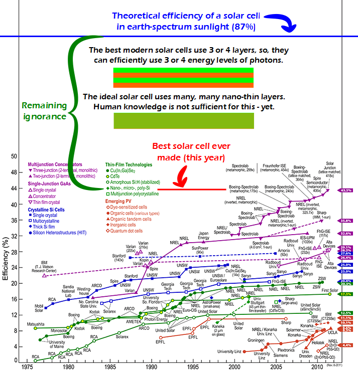

Comic JK 768
When I Feel Like It
⇤
<
?
>
⇥

⇤
<
?
>
⇥
Forum
.
RSS
.
Digg
.
Facebook
.
Reddit
.
Twitter
.
Stumbleupon
Enter your thoughts on number 768 here. Please, no spamming, trolling, phreaking, or nano-thin layers. Your mother biologically converts solar energy into methane. I like how the best is exactly 50% of the theoretical limit. >Humm? Are my glasses not working correctly? I get ~44% >>43.5%*2=87%. But I do not know where this upper limit comes from. It looks like it is just the amount of sunlight above some infrared threshold. -That threshold would be the blackbody radiation of the Earth- So it is a pure theoretical limit, the technical limit is lower. Interesting, how the different groups have a different efficiency - and keep separated over the whole time range. >>>Also interesting, unfortunately, that the slope of each development curve remains largely similar and quite shallow, with only one major exception. Thing is, even if we could make ideal solar cells, we have to realize that there's still an obscene capital cost (as with all green energy sources) that makes deploying them effectively difficult. As long as coal power remains prevalent and cheap, you can't charge enough for solar energy (which, once on the grid, is indistinguishable from any other power source) to justify the capital costs. That's the main flaw with green energy sources - they're too expensive and the product is too cheap, so good economics says not to build one. What does (3-4)layers have to do with (3-4)energy levels? Even if we were talking about layers of molecular sheets 1 atom thick--I still don't get it? Never mind, I was thinking electron energy levels not frequencies of photons. I think I get it--higher E levels penetrate deeper before absorption. E = h*nu >Specific materials are good at absorbing only specific wavelengths of light (i.e. energy levels of photons) Considering efficiency only is useless without also considering cost of production, materials involved, and life span. It might end up being a lot more dollar and resource efficient to use low efficiency cells with cheap-o materials and manufacturing process. I'd rather have 12% efficient cells that cost $5 than 40% efficient ones that cost $500. > At least when space requirements are not a significant issue. Wait... Where's the funny? shoulden't there be some funny? > Almost anything involving public perception versus reality with respect to renewable energy is damn hilarious.. and also kind of sad. > See alt-text for the funny. > Also note the 'Remaining ignorance' section. It's also known as Texas. > I'm not one to criticize, especially a 100% free webcomic, but yeah, this is just a Powerpoint slide probably being used as part of some PhD course with the words "Remaining Ignorance" added. Now I have to say it's very interesting, but not really a comic. >>though isn't part of the point of comics such as ComicJK and xkcd that do have such "non-comic" comics... ? >>>If so, this is the very first one I've seen that didn't have a significant amount of "funny" in them as well. Don't get me wrong--I love the graphs and charts in the comics, but there is usually some good underlying humor in them. Y'know, I think by the time we're working on becoming a type 2 civilization, we'll have gotten over not thinking things through. Making a dyson sphere of solar panels around the sun qualifies as not thinking things through. >+1 dyson sphere reference! >>though Dyson wrote of a "shell" - composed of *a lot* of unconnected bodies - and not a solid sphere... and admitted to having been inspired by a similar concept written about by Olaf Stapledon... [gem]How does solar cell efficiency compare to oil-seed cultivation? I can guess the answer... Covering existing buildings with solar collectors is a nice idfea, but what are the energy figures for that? Say you take new-york and assume 20% of the area is roofing adaptable to solar collection. At the current sensible efficiencies, can it be made self-sufficient? Actually uneven building heights make the efficiency lower, as you can't efficiently use the area shadowed by a sky-scraper. >there has been at least one proposal to add solar cells to windows - ( with various ideas about striped patterns and cells collecting only at specific frequencies to balance the conflicting goals of generating electricity while still allowing sufficient light into the building... ) So dedicated solar farms might be needed, robbing the land of solar energy it needs in many cases. Why this push for direct solar conversion, anyway? What is so wrong with mirrors, except they are mechanical - but so are wind-turbines, and more-so? Space-based collection seems like the next option. Holy Shit; it's an ignorance band gap!